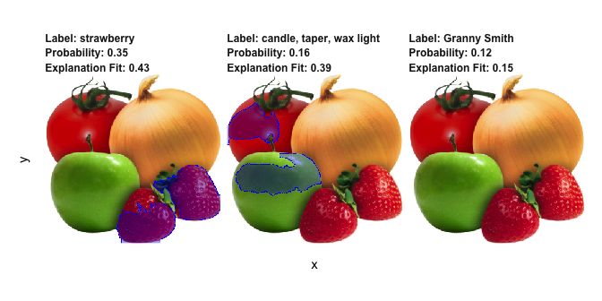

There once was a package called lime,
Whose models were simply sublime,
It gave explanations for their variations,
one observation at a time.
lime-rick by Mara Averick
This is an R port of the Python lime package (https://github.com/marcotcr/lime) developed by the authors of the lime (Local Interpretable Model-agnostic Explanations) approach for black-box model explanations. All credits for the invention of the approach goes to the original developers.
The purpose of lime is to explain the predictions of black box classifiers. What this means is that for any given prediction and any given classifier it is able to determine a small set of features in the original data that has driven the outcome of the prediction. To learn more about the methodology of lime read the paper and visit the repository of the original implementation.
The lime package for R does not aim to be a line-by-line port of its Python counterpart. Instead it takes the ideas laid out in the original code and implements them in an API that is idiomatic to R.
An example
Out of the box lime supports a long range of models, e.g. those created with caret, parsnip, and mlr. Support for unsupported models are easy to achieve by adding a predict_model and model_type method for the given model.
The following shows how a random forest model is trained on the iris data set and how lime is then used to explain a set of new observations:
library(caret)
library(lime)
# Split up the data set
iris_test <- iris[1:5, 1:4]
iris_train <- iris[-(1:5), 1:4]
iris_lab <- iris[[5]][-(1:5)]
# Create Random Forest model on iris data
model <- train(iris_train, iris_lab, method = 'rf')
# Create an explainer object
explainer <- lime(iris_train, model)
# Explain new observation
explanation <- explain(iris_test, explainer, n_labels = 1, n_features = 2)
# The output is provided in a consistent tabular format and includes the
# output from the model.
explanation
#> # A tibble: 10 x 13
#> model_type case label label_prob model_r2 model_intercept model_prediction
#> <chr> <chr> <chr> <dbl> <dbl> <dbl> <dbl>
#> 1 classific… 1 seto… 1 0.681 0.129 0.987
#> 2 classific… 1 seto… 1 0.681 0.129 0.987
#> 3 classific… 2 seto… 1 0.692 0.123 0.984
#> 4 classific… 2 seto… 1 0.692 0.123 0.984
#> 5 classific… 3 seto… 1 0.686 0.129 0.983
#> 6 classific… 3 seto… 1 0.686 0.129 0.983
#> 7 classific… 4 seto… 1 0.695 0.119 0.985
#> 8 classific… 4 seto… 1 0.695 0.119 0.985
#> 9 classific… 5 seto… 1 0.694 0.123 0.984
#> 10 classific… 5 seto… 1 0.694 0.123 0.984
#> # … with 6 more variables: feature <chr>, feature_value <dbl>,
#> # feature_weight <dbl>, feature_desc <chr>, data <list>, prediction <list>
# And can be visualised directly
plot_features(explanation)
lime also supports explaining image and text models. For image explanations the relevant areas in an image can be highlighted:
explanation <- .load_image_example()
plot_image_explanation(explanation)
Here we see that the second most probably class is hardly true, but is due to the model picking up waxy areas of the produce and interpreting them as wax-light surface.
For text the explanation can be shown by highlighting the important words. It even includes a shiny application for interactively exploring text models:

Installation
lime is available on CRAN and can be installed using the standard approach:
install.packages('lime')To get the development version, install from GitHub instead:
# install.packages('devtools')
devtools::install_github('thomasp85/lime')Code of Conduct
Please note that the ‘lime’ project is released with a Contributor Code of Conduct. By contributing to this project, you agree to abide by its terms.